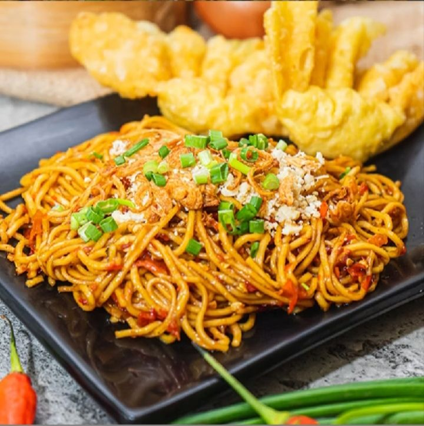
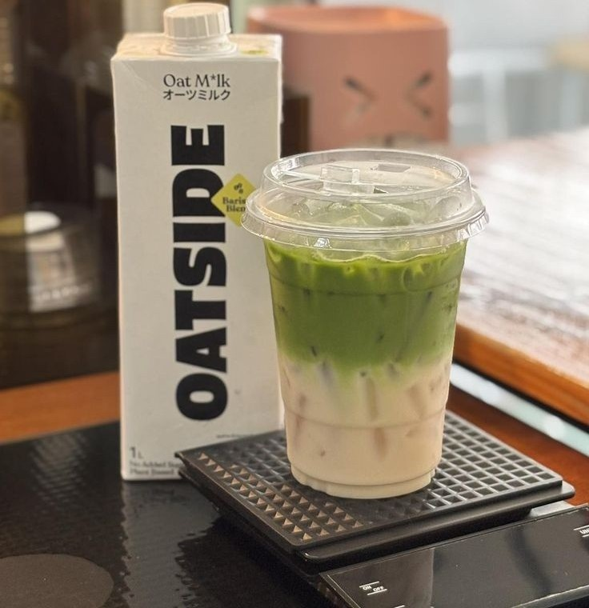
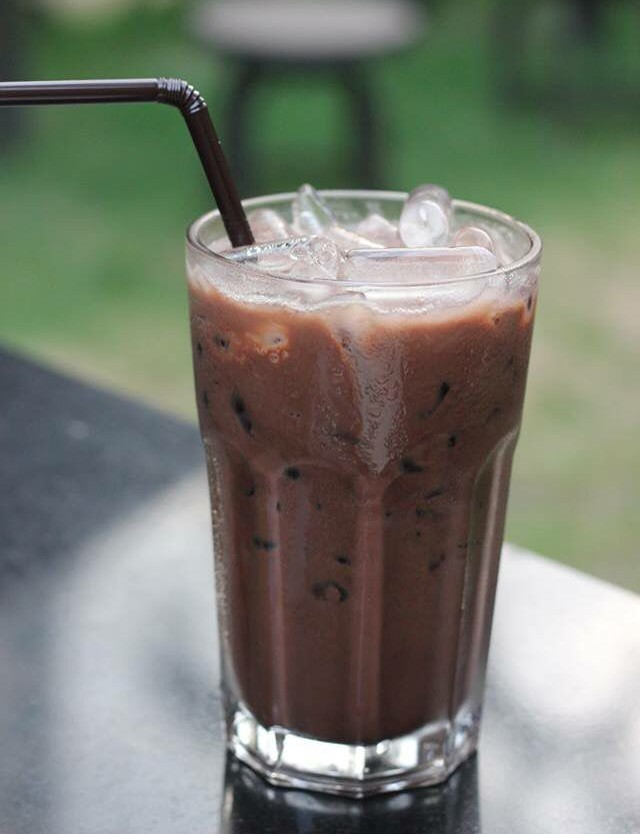
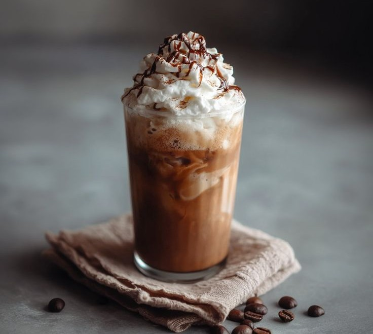

Badminton


aku pilih gambar ini karena kamu dulu sering bilang kamu suka gacoan

aku sering denger kamu paling suka minum matcha, dan mu pernah foto juga mu beli es atau minum banyak bet itu isi nya matcha semua 😂

kamu dulu sering bilang kamu suka minum kopi, aku ga ekspek kamu suka cafe mocha soalnya mu sering bilang mu lagi minum americano terus

kalau coklat jujur aku baru tau hehehehehe soalnya kalau ga salah kamu ga pernah bilang kamu minum coklat 😜